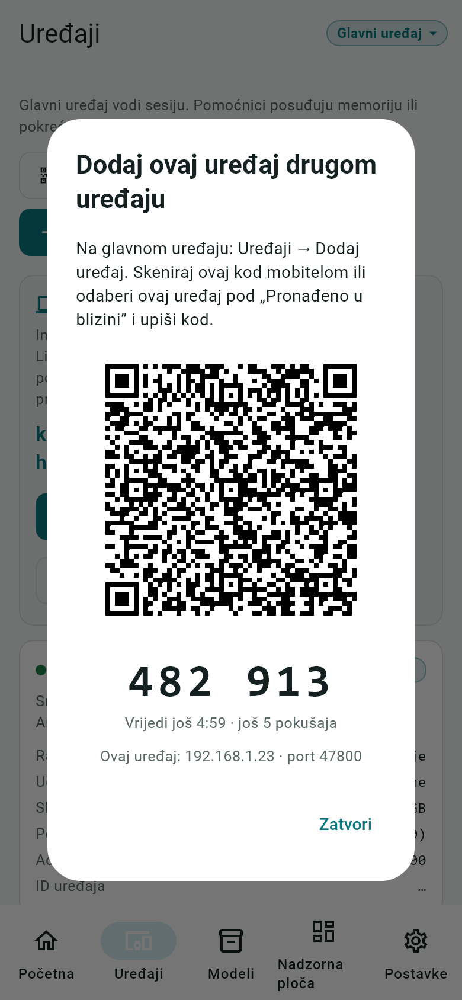
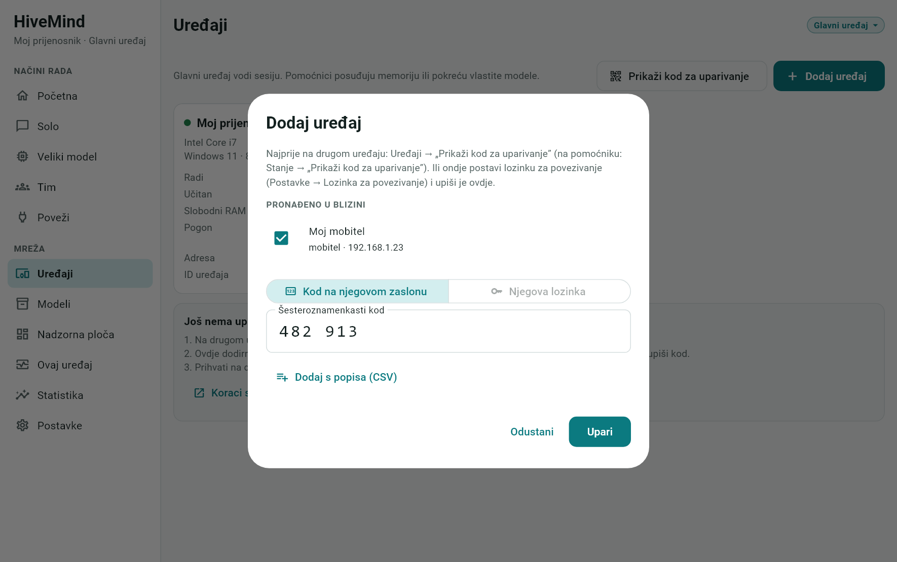
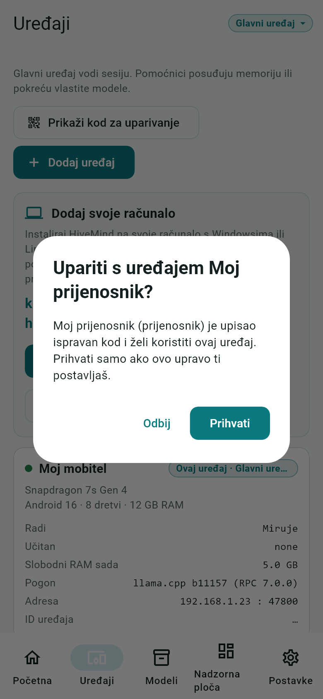
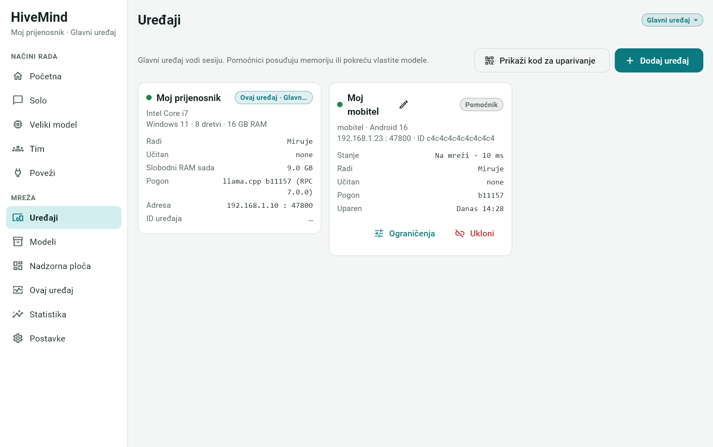

Kako instalirati HiveMind na računalo
Oko 10 minuta. Trebaju ti računalo, mobitel s HiveMindom i jedna Wi‑Fi mreža za oba.
Nazivi u sustavu Windows navedeni su hrvatski, a u zagradi engleski, ako ti je Windows na engleskom.
Instalacija na Windows Windows 10 ili 11, 64-bitni
-
Preuzmi
Ako preglednik kaže da se datoteka „ne preuzima često”: otvori popis preuzimanja, klikni … pokraj datoteke → Zadrži (Keep); Edge još pita Svejedno zadrži (Keep anyway).
-
Deblokiraj zip (preporučeno)
Otvori mapu Preuzimanja (Downloads). Desni klik na
HiveMind-windows-x64.zip→ Svojstva (Properties). Na dnu označi Deblokiraj (Unblock) → U redu.Tako izbjegneš plavo upozorenje pri pokretanju. Nema kvadratića „Deblokiraj”? Preskoči ovaj korak.
-
Raspakiraj
Desni klik na zip → Izdvoji sve… (Extract All) → odaberi mjesto koje ćeš lako naći, npr. Dokumenti → Izdvoji (Extract).
Ne pokreći HiveMind iznutra zipa: trebaju mu datoteke pokraj njega.
-
Pokreni HiveMind
Otvori mapu HiveMind i dvaput klikni
hivemind.exe.„Windows je zaštitio vaše računalo” (Windows protected your PC)?Klikni Više informacija (More info) → Svejedno pokreni (Run anyway). Windows to prikazuje za nove programe koji još nisu potpisani. Pojavi se samo jednom.„Pametna kontrola aplikacija je blokirala aplikaciju” (Smart App Control)?Pogledaj Smart App Control niže. -
Dopusti mu kućnu mrežu
Windows jednom pita: označi Privatne mreže (Private networks) → Dopusti pristup (Allow access). Tako ga mobitel može pronaći. „Javne mreže” (Public networks) ostavi neoznačene.
Pitanje se može pojaviti tek kad HiveMind prvi put traži uređaje (korak 2 niže).
-
Lakše idući put (po želji)
Desni klik na
hivemind.exe→ Prikvači na Start (Pin to Start; na Windowsima 11 najprije Prikaži više mogućnosti), ili Pošalji u → Radna površina (stvori prečac). U HiveMindu Postavke → Pokreni s Windowsima drži ga spremnim u traci pokraj sata.
Dalje: upari ga s mobitelom.
Instalacija na Linux 64-bitni, Ubuntu 22.04 ili noviji, Debian 12, Fedora, Mint 21 ili noviji
-
Preuzmi
-
Raspakiraj
U upravitelju datoteka: desni klik na datoteku → Raspakiraj ovdje (Extract Here) i premjesti mapu HiveMind u svoju osobnu mapu. Ili u terminalu:
tar -xzf ~/Downloads/HiveMind-linux-x64.tar.gz -C ~Ako se tvoja mapa preuzimanja zove
Preuzimanja, napiši~/Preuzimanja/…. -
Dodaj ga u izbornik aplikacija
U terminalu:
~/HiveMind/install.shSamo dodaje stavku s ikonom u izbornik, za tvog korisnika; lozinka nije potrebna. Kasnije premjestiš mapu? Pokreni ga ponovno.
-
Pokreni HiveMind
Potraži HiveMind u izborniku aplikacija. Ili u terminalu:
~/HiveMind/hivemind -
Neka se uređaji pronađu
„Pronađeno u blizini” koristi
avahi-daemon, koji Ubuntu, Fedora i Mint već pokreću. Ako si uključio vatrozid (ufw), dopusti HiveMindov port i pronalaženje uređaja:sudo ufw allow 47800:47801/tcp sudo ufw allow 5353/udp
Dalje: upari ga s mobitelom.
Uparivanje s mobitelom
Mobitel i računalo spoji na istu Wi‑Fi mrežu i otvori HiveMind na oba. Računalo postaje glavni uređaj (pokreće modele), a mobitel njegov pomoćnik.
-
MobitelPrikaži kod za uparivanje
Otvori Uređaji → Prikaži kod za uparivanje. Ostavi taj zaslon otvoren: kod vrijedi 5 minuta.

-
RačunaloDodaj mobitel
Otvori Uređaji → Dodaj uređaj. Pod Pronađeno u blizini odaberi svoj mobitel, upiši šesteroznamenkasti kod s mobitela → Upari.

Tvog mobitela nema na popisu?Upiši njegovu adresu u Ili njegova adresa: mobitel je prikazuje ispod koda (npr.192.168.1.23). I dalje ništa? Pogledaj Mobitel i računalo se ne pronalaze. -
MobitelPrihvati
Mobitel pita želiš li ga upariti s računalom → Prihvati.

-
RačunaloGotovo
Mobitel je na zaslonu Uređaji na računalu kao Pomoćnik, sa zelenom točkom dok je spojen. Od sada se pronalaze sami, čak i kad im se adrese promijene.

Želiš opet koristiti mobitel samostalno? Na mobitelu dodirni oznaku gore desno → Glavni uređaj. Više mobitela? Ponovi korake 1–3 za svaki.


Prvi razgovor na računalu
Nabavi model
Modeli → Katalog: odaberi model označen Stane na ovaj uređaj → Preuzmi. Qwen3 4B Instruct je dobar početak na većini prijenosnika (oko 2,5 GB).
Razgovaraj
Solo → gore odaberi model → Učitaj → upiši pitanje i pritisni Enter.
Iskoristi memoriju mobitela
Za model prevelik za samo računalo: Veliki model. Za duge dokumente: Tim. Oba su objašnjena u uputama.
Nešto nije uspjelo
Mobitel i računalo se ne pronalaze
- Oba na istoj Wi‑Fi mreži, ne na mreži za goste, i HiveMind otvoren na oba.
- Windows: tvoja Wi‑Fi mreža mora biti privatna: Postavke → Mreža i internet → Wi‑Fi → tvoja mreža → Privatna mreža (Private network).
- Windows: ako si kliknuo „Odustani” kad je Windows pitao za mrežu: Sigurnost sustava Windows → Vatrozid i zaštita mreže → Dopusti aplikaciju kroz vatrozid (Allow an app through firewall) → Promijeni postavke → označi Privatno pokraj svake stavke hivemind → U redu.
- Linux: naredbe za
ufwiz 5. koraka. - Umjesto „Pronađeno u blizini” upiši adresu mobitela (prikazana je ispod koda za uparivanje).
- Neki usmjerivači (routeri) drže uređaje odvojeno („AP isolation” ili „client isolation”); isključi to u usmjerivaču ili koristi drugu mrežu.
„Kod je istekao” ili „pogrešan kod”
Kod vrijedi 5 minuta i 5 pokušaja. Na mobitelu dodirni Prikaži novi kod i upiši novi.
Windows 11: „Smart App Control je blokirao aplikaciju koja bi mogla biti nesigurna”
Smart App Control (Pametna kontrola aplikacija) blokira svaki program koji nije potpisan i nema „svejedno pokreni” za jedan program. HiveMind još nije potpisan. Možeš:
- pričekati potpisanu verziju HiveMinda (Microsoft Store), ili
- isključiti Smart App Control: Sigurnost sustava Windows → Kontrola aplikacija i preglednika → postavke za Smart App Control → Isključeno (Off). Na nekim verzijama Windowsa ne može se ponovno uključiti bez ponovne instalacije Windowsa, pa dobro razmisli.
Windows: ništa se ne događa ili poruka o DLL-u koji nedostaje
Provjeri jesi li raspakirao cijeli zip (3. korak) i pokrećeš li hivemind.exe iz raspakirane mape HiveMind. Ako je antivirusni program premjestio datoteku u karantenu (npr. llama-server.exe, AI pogon), vrati je i dopusti.
Linux: HiveMind se ne pokreće
Pokreni ga u terminalu da vidiš zašto: ~/HiveMind/hivemind
- Nedostaje
libgtk-3.so.0:sudo apt install libgtk-3-0(Fedora:sudo dnf install gtk3). - Nedostaje
libgomp.so.1(model se ne učitava):sudo apt install libgomp1(Fedora:sudo dnf install libgomp). GLIBC_2.34 not found: tvoj Linux je prestar (npr. Ubuntu 20.04). Potreban je Ubuntu 22.04 ili noviji.
Mobitel nakon nekog vremena prestane pomagati
Mnogi mobiteli zaustavljaju aplikacije u pozadini. Na mobitelu HiveMind prikazuje Pomaži i u pozadini s koracima za marku tvog mobitela; napravi ih jednom. Pogledaj Da mobiteli i dalje pomažu.
Ažuriranje i uklanjanje
- Ažuriranje: preuzmi novu verziju, zatvori HiveMind (Windows: ikona u traci pokraj sata → Quit; Linux: zatvori prozor) i stavi novu mapu HiveMind umjesto stare. Modeli, razgovori i upareni uređaji ostaju: čuvaju se u tvojoj korisničkoj mapi, ne u mapi HiveMind. Ažuriraj i mobitel: svi uređaji trebaju imati istu verziju.
- Uklanjanje na Windowsima: u HiveMindu isključi Pokreni s Windowsima, zatvori ga i obriši mapu HiveMind. Za brisanje i modela i razgovora obriši
%APPDATA%\dev.hivemind. - Uklanjanje na Linuxu:
~/HiveMind/install.sh --remove, zatim obriši mapu HiveMind. Modeli i razgovori:~/.local/share/dev.hivemind.hivemind.